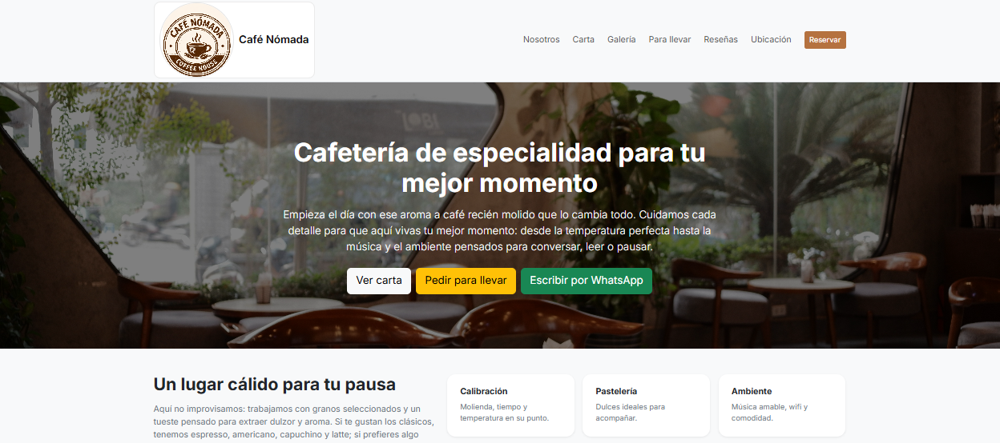
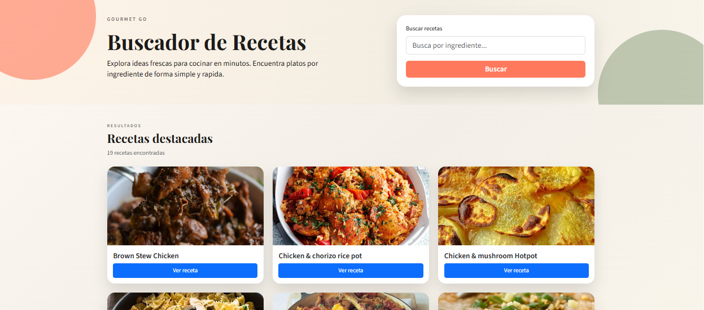
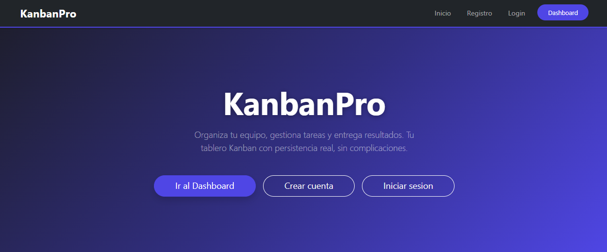

Cafe Nomada
Landing page responsive para una cafeteria, construida con HTML5, Bootstrap 5 y JavaScript vanilla. Incluye secciones de menu, galeria, resenas y contacto.
Diseño web - Marca - estrategia digital
Construyo aplicaciones web modernas, funcionales y con buena experiencia de usuario. Apasionado por el código limpio y los proyectos con propósito.
Estos son algunos de los proyectos que construí durante mi formación como desarrollador.

Landing page responsive para una cafeteria, construida con HTML5, Bootstrap 5 y JavaScript vanilla. Incluye secciones de menu, galeria, resenas y contacto.

Aplicación web para buscar recetas por ingrediente usando una API pública. Permite explorar resultados, abrir el detalle de cada plato y revisar ingredientes y preparación.

Aplicación fullstack de gestión de tareas estilo Kanban. Permite crear tableros, columnas y tarjetas, con persistencia de datos en PostgreSQL y API REST propia.
Tecnologías vistas
Herramientas vistas
Soy Analista Programador e integrador de tecnologías, con experiencia en seguridad privada desde 2011. He trabajado en instalación y supervisión de sistemas de videovigilancia, control de acceso, automatismos, alarmas, conectividad e innovación tecnológica aplicada a entornos reales.
Además, desarrollo propuestas de diseño web, marca y estrategia digital con foco en sitios a medida, experiencia de usuario, SEO, conversión y presencia online. Mi perfil mezcla tecnología, ejecución en terreno, marketing digital y visión estratégica para construir soluciones útiles, claras y orientadas a resultados.
Uno programación, electrónica, seguridad tecnológica y comunicación digital en proyectos con aplicación práctica.
He participado en cámaras, alarmas, control de acceso, detección de incendios, energía solar, internet rural y monitoreo.
Trabajo pensando en marca, confianza, posicionamiento y soluciones que realmente resuelvan necesidades concretas.
¿Tenés un proyecto en mente o querés hablar sobre trabajo? Escribime.